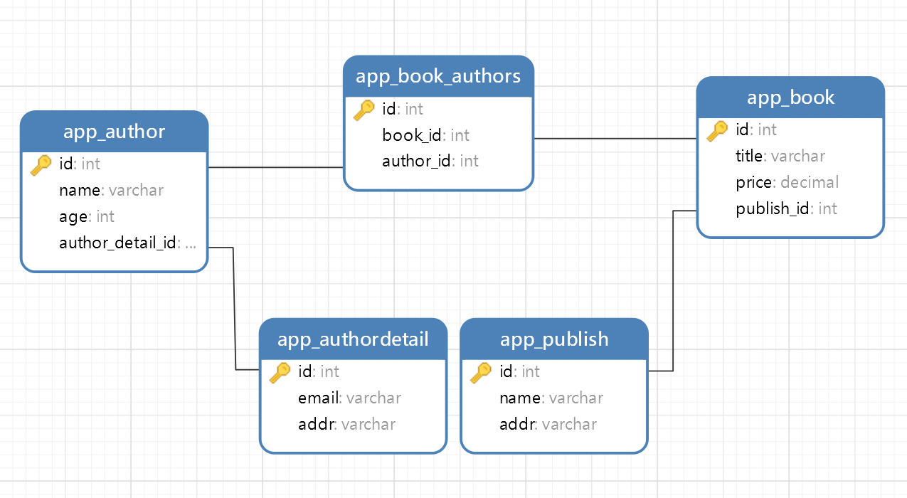

模型层
一、连接数据库
1. 创建数据库
| CREATE DATABASE test CHARSET utf8;
# 授权
GRANT ALL ON test.* TO 'admin'@'10.0.0.%' IDENTIFIED BY 'admin@123';
|
2. 修改配置文件
1. 在mysite/setting.py文件中指定mysql数据库的相关信息
1
2
3
4
5
6
7
8
9
10
11
12
13
14
15
16
17
18
19
20
21
22
23
24
25
26
27
28
29
30 | DATABASES = {
'default': {
'ENGINE': 'django.db.backends.mysql',
'NAME': 'test',
'USER': 'admin',
'PASSWORD': 'admin@123',
'HOST': '10.0.0.128',
'PORT': 3306,
'CHARSET': 'utf8'
}
}
LOGGING = {
'version': 1,
'disable_existing_loggers': False,
'handlers': {
'console':{
'level':'DEBUG',
'class':'logging.StreamHandler',
},
},
# 在控制台打印ORM执行的SQL语句
'loggers': {
'django.db.backends': {
'handlers': ['console'],
'propagate': True,
'level':'DEBUG',
},
}
}
|
2. 修改默认的mysql模块
在mysite/__init__.py中修改连接mysql的模块
| import pymysql
pymysql.install_as_MySQLdb()
|
3. 安装pymysql模块
3. 创建表
| #filename: models.py
from django.db import models
# Create your models here.
class User(models.Model):
id = models.AutoField(primary_key=True)
username = models.CharField(max_length=32)
age = models.IntegerField()
|
4. 迁移数据库
| # 于在该app下建立migrations目录，并记录所有的关于modes.py的改动
# 比如0001_initial.py， 但是这个改动还没有作用到数据库文件
python manage.py makemigrations
# 将对数据库的更改在数据库中真实执行。
python manage.py migrate
|
二、创建表
ORM创建的表自动加了前缀，前缀是应用的名称，防止多个应用表名冲突。
1. 独立表
| #filename: models.py
from django.db import models
# Create your models here.
class User(models.Model):
id = models.AutoField(primary_key=True)
username = models.CharField(max_length=32)
age = models.IntegerField()
|
2. 关系表
表与表之间的关系：
- 一对一：
models.OneToOneField()
- 一对多：
models.ForeignKey()
- 多对多：
models.ManyToManyField()
- 没有关系
创建表关系先将基表创建出来，然后再添加外键字段。

1
2
3
4
5
6
7
8
9
10
11
12
13
14
15
16
17
18
19
20
21
22
23
24
25
26
27
28
29
30 | #filename: models.py
class Book(models.Model):
title = models.CharField(max_length=32, verbose_name="书名")
price = models.DecimalField(max_digits=8, decimal_places=2, verbose_name="价格")
# 图书和出版社是一对多，并且书是多的一方，所以外键字段放在Book表里面
# 默认就是与出版社表的主键字段做外键关联
# 如果字段对应的是ForeignKey 那么会orm会自动在字段的后面加_id，如果自己加了_id那么orm还是会在后面继续加_id
publish = models.ForeignKey(to='Publish')
# 图书和作者是多对多的关系，外键字段建在任意一方均可，但是推荐建在查询频率较高的一方
# authors是一个虚拟字段，并不会在数据库中创建这个字段，主要是用来告诉orm书籍表和作者表是多对多关系，让orm自动帮你创建第三张关系表
authors = models.ManyToManyField(to='Author')
class Publish(models.Model):
name = models.CharField(max_length=32, verbose_name="出版社名称")
addr = models.CharField(max_length=64, verbose_name="通讯地址")
class Author(models.Model):
name = models.CharField(max_length=32, verbose_name="作者姓名")
age = models.IntegerField(verbose_name="年龄")
# 作者与作者详情是一对一的关系,外键字段建在任意一方都可以,但是推荐建在查询频率较高的表中
# OneToOneField也会自动给字段加_id后缀
author_detail = models.OneToOneField(to='AuthorDetail')
class AuthorDetail(models.Model):
email = models.EmailField(verbose_name="邮箱")
addr = models.CharField(max_length=32, verbose_name="通讯地址")
|
在django1.X版本中外键默认都是级联更新删除的
3. 多对多三种创建方式
1. 全自动
自动创建第三张关系表，但是扩展性差，没有办法添加额外字段。可以用ORM提供的第三张关系表的方法，如add,remove,clear,set等方法。
2. 全手动
自己创建第三张表，自己建外键。扩展性高，但是无法利用ORM提供的简便的查询方法。
| class Book(models.Model):
name = models.CharField(max_length=32)
class Author(models.Model):
name = models.CharField(max_length=32)
class Book2Author(models.Model):
book_id = models.ForeignKey(to='Book')
author_id = models.ForeignKey(to='Author')
|
3. 半自动
实际项目用此方法，扩展性好。可以使用ORM的正反向查询，但是没法使用add,set,remove,clear这四个方法
1
2
3
4
5
6
7
8
9
10
11
12
13 | class Book(models.Model):
name = models.CharField(max_length=32)
authors = models.ManyToManyField(to='Author',
through='Book2Author', # 告诉ORM通过Book2Author来关联关系
through_fields=('book','author') # 告诉ORM哪两个字段来确定关联关系（通过第三张表查询当前BOOK表是通过book字段，所以book字段在前，author在后）
)
class Author(models.Model):
name = models.CharField(max_length=32)
class Book2Author(models.Model):
book = models.ForeignKey(to='Book')
author = models.ForeignKey(to='Author')
|
三、ORM操作
1. 增
1.1 单表
1.1.1 方法一：create()
| # 方式1：直接传值
models.User.objects.create(username='Eric', age=16)
# 方式2：传入一个字典
user = {
'username': 'Ron',
'age': 18,
}
models.User.objects.create(**user)
|
1.1.2 方法二：save()
| # 方式1：创建对象时赋值
user_obj = models.User(username='Jack', age=16)
user_obj.save()
# 方式2：先创建对象，然后赋值保存
user_obj = models.User()
user_obj.username = 'John'
user_obj.age = 17
user_obj.save()
|
1.2 多表
1.2.1 一对一、一对多
方式一：直接写外键字段id
| models.Book.objects.create(title='数据结构C语言版', price=35.00, publish_id=1)
|
方式二：通过对象创建
| publish_obj = models.Publish.objects.filter(pk=1).first() # Publish object
models.Book.objects.create(title='数据结构题集C语言版', price=29.0, publish=publish_obj)
|
1.2.2 多对多
方式一：通过主键值添加
| book_obj = models.Book.objects.filter(pk=1).first()
book_obj.authors.add(2, 3) # book_obj.authors相当于已经定位到第三张关系表
|
方式二：通过对象添加
| book_obj = models.Book.objects.filter(pk=1).first()
author_obj1 = models.Author.objects.filter(pk=2).first()
author_obj2 = models.Author.objects.filter(pk=3).first()
book_obj.authors.add(author_obj1, author_obj2)
|
1.3 批量插入bulk_create()
| book_list = []
for i in range(5):
book_obj = models.Book(title='第%s本书' % i, price=20, publish_id=1)
book_list.append(book_obj)
models.Book.objects.bulk_create(book_list)
# 执行的SQL:INSERT INTO `app_book` (`title`, `price`, `publish_id`) VALUES ('第0本书', '20.00', 1), ('第1本书', '20.00', 1), ('第2本书', '20.00', 1), ('第3本书', '20.00', 1), ('第4本书', '20.00', 1);
|
2. 查
返回的结果是一个QuerySet对象，可以把它看成是一个列表套数据对象。支持索引和切片操作，但是不支持负数，并且不推荐使用索引。
正反向查询：
- 正向查询：从有外键字段的表向没有外键字段的表查
- 反向查询：从没有外键字段的表向有外键字段的表查询
正向查询按字段，反向查询按表名小写
2.1 单表查询
2.1.1 查询所有数据
| # 方式1：
user_obj = models.User.objects.filter()
print(user_obj)
# 方式2：
user_obj = models.User.objects.all()
print(user_obj)
|
2.1.2 按条件筛选
filter括号内可以写多个参数，查询的时候默认是and关系
| user_obj = models.User.objects.filter(age=16)
print(user_obj) # <QuerySet [<User: User object>]>
user_obj = models.User.objects.get(age=16)
print(user_obj) # User object
# get方法返回的直接就是当前数据对象，但是如果数据不存在该方法会直接报错。而filter则不会，所以建议使用filter
|
| user_obj = models.User.objects.filter(pk=2)
pk会自动查找到当前表的主键字段,指代的就是当前表的主键字段.用了pk之后就不需要知道当前表的主键字段具体的名字可。
|
2.1.3 查询结果再处理
| order_by() # 对结果排序
reverse() # 对查询结果反向排序,前提是数据已经排过序
exists() # 如果QuerySet包含数据，就返回True，否则返回False
distinct() # 从返回结果中剔除重复纪录
values() # 返回字典序列，每一行的数据以字典的形式返回
values_list() # 返回元组序列，每一行的数据以元组的形式返回
count() # 返回数据库中匹配查询(QuerySet)的对象数量。
first() # 返回第一条记录
last() # 返回最后一条记录
|
2.1.4 条件过滤
| res = models.User.objects.filter(age__gt=16)
print(res) # <QuerySet [<User: User object>, <User: User object>]>
|
常用条件
1
2
3
4
5
6
7
8
9
10
11
12
13 | __gt # 大于
__lt # 小于
__gte # 大于或小于
__lte # 小于或等于
__contains # 包含，对大小写敏感
__icontains # 包含，对大小写不敏感
__startwith
__endwith
__istartwith
__iendwith
__in=[]
__range[start,end] # 在start和end之间，包含start和end
__isnull
|
2.2 多表查询
2.2.1 基于对象的跨表查询
1. 正向查询
| # 查询书籍主键为1的出版社
book_obj = models.Book.objects.filter(pk=1).first()
res = book_obj.publish
print(res) # Publish object
print(res.name) # 清华大学出版社
# 查询书籍主键为2的作者
book_obj = models.Book.objects.filter(pk=1).first()
res = book_obj.authors.all()
print(res) # <QuerySet [<Author: Author object>, <Author: Author object>]>
|
2. 反向查询
| # 查询主键为1的出版社出版的书
publish_obj = models.Publish.objects.filter(pk=1).first()
res = publish_obj.book_set.all()
print(res) # <QuerySet [<Book: Book object>, <Book: Book object>]>
author_detail_obj = models.AuthorDetail.objects.filter(addr__contains='清华大学').first()
res = author_detail_obj.author
print(res.name)
|
基于对象反向查询的时候：当查询结果可以有多个的时候就必须加_set.all()；当的结果只有一个的时候不需要加_set.all()
2.2.2 基于双下划线的跨表查询
1. 正向查询
| # 查作者详情
res = models.Author.objects.filter(name='严蔚敏').values('author_detail__email ', 'name') # 小写第三张表名__字段名
print(res) # <QuerySet [{'author_detail__email': 'yanweimin@126.com', 'name': '严蔚敏'}]>
# 连续跨表查书籍主键是1的作者的邮箱
# book-->中间表-->author_detail
res = models.Book.objects.filter(pk=1).values('authors__author_detail__email')
print(res) # <QuerySet [{'authors__author_detail__email': 'yanweimin@126.com'}, {'authors__author_detail__email': 'wuweimin@163.com'}]>
|
2. 反向查询
| # 查作者详情
res = models.AuthorDetail.objects.filter(author__name='严蔚敏').values('email', 'author__name')
print(res) # <QuerySet [{'email': 'yanweimin@126.com', 'author__name': '严蔚敏'}]>
|
2.3 聚合查询（aggregate）和分组查询（annotate）
聚合查询通常情况下都是配合分组一起使用的
| from django.db.models import Max, Min, Sum, Count, Avg
res = models.Book.objects.annotate(author_num=Count('authors')).values('title', 'author_num') # author_num相当于字段的别名
print(res)
res = models.Book.objects.aggregate(Max('price'), Min('price'), Sum('price'), Count('pk'), Avg('price'))
print(res) # {'price__max': Decimal('35.00'), 'price__min': Decimal('29.00'), 'price__sum': Decimal('64.00'), 'pk__count': 2, 'price__avg': 32.0}
|
2.5 F查询
能够直接获取到表中某个字段对应的数据
1. 加、减、乘、除、取模以及幂运算等算术操作
| from django.db.models import F
res = models.Book.objects.update(price=F('price') - 5)
print(res) # 执行的SQL：UPDATE `app_book` SET `price` = (`app_book`.`price` - 5);
|
2. 拼接字符串
| from django.db.models import F
from django.db.models.functions import Concat
from django.db.models import Value
models.Book.objects.update(title=Concat(F('title'), Value('(热销)')))
# 如果不用concat，字段下所有值都会变为空
|
2.6 Q查询
实现复杂的条件查询
1
2
3
4
5
6
7
8
9
10
11
12 | from django.db.models import Q
res = models.Book.objects.filter(Q(price__gt=20), Q(price__lt=30)) # Q包裹逗号分割 还是and关系
print(res) # <QuerySet [<Book: Book object>]>
res = models.Book.objects.filter(Q(price__gt=30) | Q(price__lt=20)) # | or关系
print(res) # <QuerySet [<Book: Book object>]>
res = models.Book.objects.filter(~Q(price__gt=30)) # ~ not关系
print(res) # # <QuerySet [<Book: Book object>]>
# 对应的SQL
# SELECT `app_book`.`id`, `app_book`.`title`, `app_book`.`price`, `app_book`.`publish_id` FROM `app_book` WHERE (`app_book`.`price` > 20 AND `app_book`.`price` < 30) LIMIT 21;
# SELECT `app_book`.`id`, `app_book`.`title`, `app_book`.`price`, `app_book`.`publish_id` FROM `app_book` WHERE (`app_book`.`price` > 30 OR `app_book`.`price` < 20) LIMIT 21;
# SELECT `app_book`.`id`, `app_book`.`title`, `app_book`.`price`, `app_book`.`publish_id` FROM `app_book` WHERE NOT (`app_book`.`price` > 30) LIMIT 21;
|
Q的高阶用法：能够将查询条件的左边也变成字符串的形式
| from django.db.models import Q
q = Q()
q.connector = 'and' # 如果不指定连接父，默认是and关系
q.children.append(('price__gt', 20))
q.children.append(('price__lt', 30))
res = models.Book.objects.filter(q)
print(res) # <QuerySet [<Book: Book object>]>
# SELECT `app_book`.`id`, `app_book`.`title`, `app_book`.`price`, `app_book`.`publish_id` FROM `app_book` WHERE (`app_book`.`price` > 20 and `app_book`.`price` < 30) LIMIT 21;
|
3. 改
3.1 单表
3.1 方法一：update()
| # user_obj 是 <class 'django.db.models.query.QuerySet'>
user_obj = models.User.objects.filter(username='John')
user_obj.update(age=20)
|
3.2 方法二：save()
| # user_obj 是 <class 'app.models.User'>
user_obj = models.User.objects.filter(username='John').first()
user_obj.age = 21
user_obj.save()
|
3.2 多表
3.2.1 一对一、一对多
方式一：直接写外键字段id
| models.Book.objects.filter(pk=1).update(publish_id=2)
|
方式二：通过对象修改
| publish_obj = models.Publish.objects.filter(pk=1).first()
models.Book.objects.filter(pk=1).update(publish=publish_obj)
|
3.2.2 多表
方式一：
| book_obj = models.Book.objects.filter(pk=1).first()
book_obj.authors.set([2]) # 括号内必须给一个可迭代对象
|
方式二：
| book_obj = models.Book.objects.filter(pk=1).first()
author_obj1 = models.Author.objects.filter(pk=2).first()
author_obj2 = models.Author.objects.filter(pk=3).first()
book_obj.authors.set([author_obj1, author_obj2]) # 括号内必须给一个可迭代对象
|
清空第三张关系表
| book_obj = models.Book.objects.filter(pk=1).first()
book_obj.authors.clear() # 括号内不要加任何参数
|
4. 删
4.1 单表
| user_obj = models.User.objects.filter(username='Jack')
user_obj.delete()
|
4.2 多表
4.2.1 一对一，一对多
方法同单表，删除是级联删除
4.2.2 多对多
方式一：根据外键值删除
| book_obj = models.Book.objects.filter(pk=1).first()
book_obj.authors.remove(2, 3)
# DELETE FROM `app_book_authors` WHERE (`app_book_authors`.`book_id` = 1 AND `app_book_authors`.`author_id` IN (2, 3));
|
方式二：通过对象删除
| book_obj = models.Book.objects.filter(pk=1).first()
author_obj1 = models.Author.objects.filter(pk=2).first()
author_obj2 = models.Author.objects.filter(pk=3).first()
book_obj.authors.remove(author_obj1, author_obj2)
# remove括号内既可以传数字也可以传对象 并且都支持多个
|
5. 事务
| from django.db import transaction
try:
with transaction.atomic():
# sql1
# sql2
...
# 在with代码快内书写的所有orm操作都是属于同一个事务
except Exception as e:
print(e)
|
四、常用字段和参数
https://www.cnblogs.com/Dominic-Ji/p/9203990.html
五、数据库查询优化
1. only与defer
only()结果是一个列表套多个对象，这些对象默认只有only括号内的属性，但是也可以点击括号内没有的属性，只是需要额外的走数据库操作。
defer()跟only刚好相反，对象里面唯独没有括号内指定的属性。
select_related(内部的本质是联表操作（inner join），括号内只能放外键字段并且多对多不行。括号内可以放多个外键字段（select_related(外键字段1__外键字段2__外键字段3__...)，将联表之后的结果全部查询出来封装到对象里面，之后对象在点击表的字段的时候都无需再走数据库。
prefetch_related()内部本质是子查询，内部通过子查询的方式将多张的表数据也封装到对象中，这样用户在使用的时候也是感觉不出来的。
上述两种方式，在不同的场景下效率各有千秋